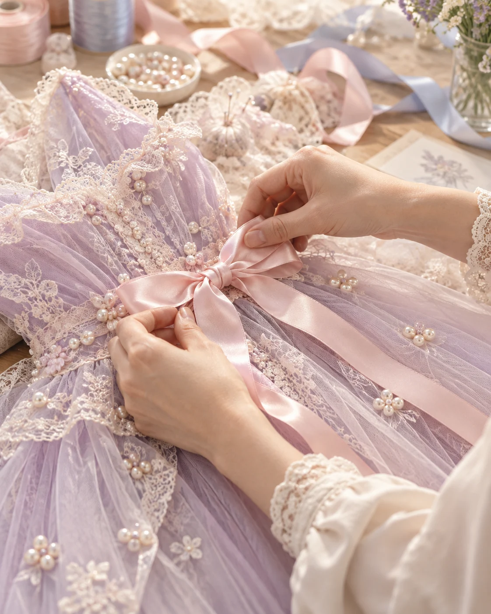
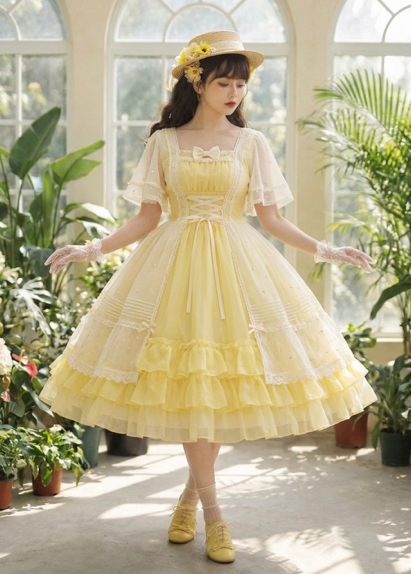

컬러로 나를 표현하는 사람
하라주쿠 카와이·로리타 문화와 아이돌 ‘멤버 컬러’를 즐기는 10대 후반부터 20대까지.
OUR LITTLE JOURNEY
일상과 로맨스 판타지 사이, 안전하게 쉬어가는 포근한 클로젯.


THE BEGINNING
난생처음 캐나다로 향하던 날, 홍콩에서 잠시 머무는 여정이 있었습니다. 예전에 가봤던 도시였지만 경유해 들르니 전혀 다르게 다가왔죠.
짧은 시간 안에 어디를 갈지 비행기에서 계획하고, 다음 목적지에 닿기 전에 무엇을 할지 궁리했습니다. 숙박비를 아낀 만큼 더 맛있는 것을 먹고, 평소라면 망설였을 체험에도 선뜻 도전했습니다.
짧지만 오히려 더 밀도 있던 그 여행의 기억이 루미노의 시작이 되었습니다.
OUR PHILOSOPHY
“여행이 평소에 못 하던 것을 하게 해주듯,
루미노는 자기다움을 더 크게 꺼내는 곳이고 싶어요.”
FOR OUR TRAVELERS
하라주쿠 카와이·로리타 문화와 아이돌 ‘멤버 컬러’를 즐기는 10대 후반부터 20대까지.
인스타그램 릴스와 유튜브 숏폼으로 패션을 만나고, 좋아하는 것을 맘껏 자랑하고 싶은 사람.
로리타·서브컬처 패션, 아바타 꾸미기와 역할놀이를 즐기는 사람.
COLOR CLOSET

